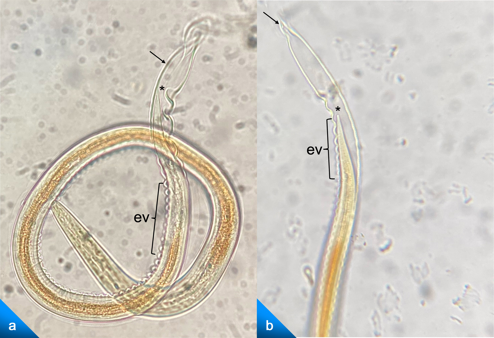

Fotomicrografías del desenvainado de larvas de nematodo 40×. Se observa la vaina refringente por la quitina que la conforma (flecha negra), las estrías refringentes y ondeantes de la vaina al doblarse (ev) y se observa la larva desenvainándose con la cola aún por dentro(*).